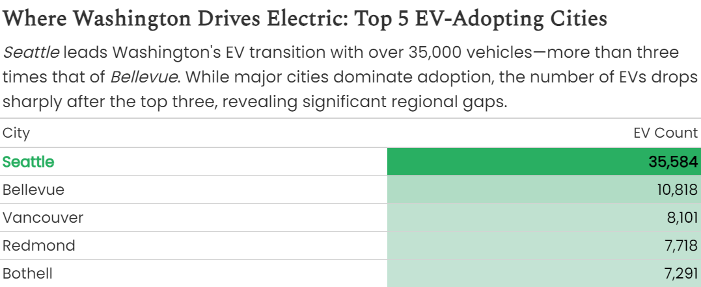
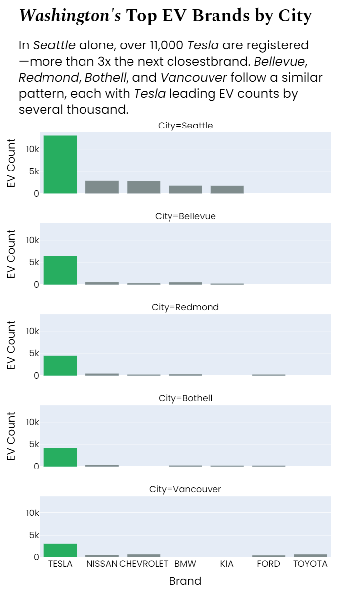
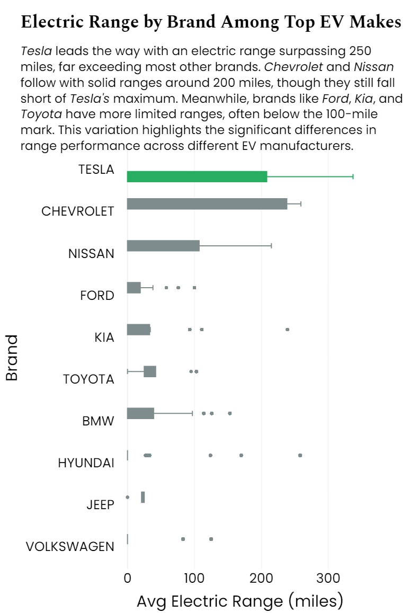

%pip install plotly
%pip install polars great_tables
import pandas as pd
import numpy as np
import plotly.express as px
import polars as pl
from great_tables import (
GT, md, google_font, style, loc
)
# Load the dataset
df = pd.read_csv("data/projects/ev-adoption/Electric_Vehicle_Population_Data.csv")
# Filter only Washington's data
df_wa = df[df['State'] == 'WA']Tesla Takes the Wheel: Brand Comparisons and EV Adoption in Washington
Tesla’s rise in range, reach, and reputation — told through data
1 Executive Summary
Electric vehicles are no longer just the future—they’re the present. In this project, I explore how Washington State is embracing EVs, with Tesla clearly driving the momentum. Using public registration data, I visualized four key dimensions of the EV landscape: growth over time, brand comparisons, electric range, and regional hotspots. The data tells a compelling story of how quickly things are changing, and how one brand in particular—Tesla—is helping lead that transformation.
2 Background and Dataset Summary
The dataset comes from the Electric Vehicle Population Data shared by the Washington State Department of Licensing. It includes more than 235,000 EVs currently registered in the state. Each record captures model year, brand, electric range, city of registration, and even utility provider — offering rich insight into how, where, and what kinds of electric vehicles people are driving in Washington.
With 17 columns in total, the dataset gives us:
- Vehicle details (make, model, model year, range)
- Location data (city, county, zip)
- Energy + policy fields (utility provider, CAFV eligibility)
- Additional metadata like MSRP and census tract
3 Why This Topic?
I’ve always been drawn to stories hidden in data—especially when they reflect real, tangible changes happening around us. As someone who cares deeply about the environment and envisions a cleaner, more sustainable future, electric vehicles represent a hopeful shift. They’re not just machines—they’re milestones on our journey toward greener cities and cleaner skies.
When I found this dataset, I was immediately intrigued. It’s rare to get such a comprehensive look at a state’s transition toward electric mobility. And with Washington leading the charge, and Tesla front and center, I saw a story waiting to be told.
That said, I don’t want to stop at one state. In the future, I’d love to explore how EV adoption compares across different regions and countries—how infrastructure, policy, and culture shape the road to electrification around the world.
4 Figure-by-Figure Walkthrough
4.1 Import Libraries
4.1.1 EV Adoption by Model Year
This bar chart shows just how sharply EV adoption has climbed, especially in the past five years. The 2023 spike is a real eye-opener.
# Filter data of EV Count by model year
df_wa_model = (
df_wa[['model', 'model_year']]
.groupby('model_year')
.agg({"model": "count"})
.reset_index()
)
df_wa_model['model_year'] = df_wa_model['model_year'].astype(str)
df_wa_model['flag'] = df_wa_model['model_year'] == '2023'
fig_bar = px.bar(
df_wa_model,
x='model_year',
y='model',
template='plotly_white',
title="<b><i>Washington's</i> Shift to Electric: Model Year Trends in EV Adoption</b>",
text='model',
color='flag'
)
fig_bar.show()
4.1.2 Top 5 Cities for EV Ownership
Seattle is far ahead of the rest.
# Filter data of top 5 cities by total EV count
top_cities = (
df_wa.groupby('city')
.agg({"model": "count"})
.sort_values(by="model", ascending=False)
.head(5)
.reset_index()
.rename(columns={'city': 'City','model': 'EV Count'})
)
top_cities['Flag'] = top_cities['City'] == "Seattle"
# Create a styled table
table_city = (
GT(pl.DataFrame(top_cities[['City','EV Count']]))
.tab_header(
title = md("__Where Washington Drives Electric: Top 5 EV-Adopting Cities__")
)
)
table_city.show()
4.1.3 EV Brand Popularity in Major Cities
Tesla leads in every single one, often by a huge margin.
# Find top 5 cities
top_5_cities = (
df_wa.groupby('city')
.agg({"model": "count"})
.sort_values(by="model", ascending=False)
.head(5)
.index
)
# Filter data
df_top_cities = df_wa[df_wa['city'].isin(top_5_cities)]
# Group by city and brand
df_brand = (
df_top_cities.groupby(['city','make'])
.agg({"model": "count"})
.reset_index()
.rename(columns={'city':'City','make':'Brand','model':'EV Count'})
)
# top 5 per city
df_brand_top5 = df_brand.groupby('City').head(5)
df_brand_top5['Flag'] = df_brand_top5['Brand'] == "TESLA"
fig_facet = px.bar(
df_brand_top5,
x='Brand', y='EV Count',
facet_col='City',
color='Flag'
)
fig_facet.show()
4.1.4 Electric Range by Brand
Tesla pulls far ahead in driving distance.
top_brands = ['TESLA','CHEVROLET','NISSAN','FORD','KIA','TOYOTA','BMW','HYUNDAI','JEEP','VOLKSWAGEN']
df_elec_range = df_wa[df_wa['make'].isin(top_brands)]
df_elec_range['flag'] = df_elec_range['make'] == "TESLA"
fig_box = px.box(
df_elec_range,
x='electric_range',
y='make',
title='<b>Electric Range by Brand Among Top EV Makes</b>',
color='flag'
)
fig_box.show() # Design Choices That Made It Work
Simplicity first: clean labels, clear axis titles, minimal clutter Color with purpose: Seattle, 2023, Tesla highlighted in green; others in gray Consistent type: Spectral (serif) for titles, Poppins (sans-serif) for data Layout flow: charts align vertically for a smooth flow Color Palette:
color_palette = {
"black": "#000000",
"green": "#27AE60",
"gray": "#7F8C8D",
"white": "#ECF0F1"
}5 Final Thoughts
Originally, I planned to include a geographic heatmap, but simplifying to four strong visuals made for a clearer and more engaging story. This project helped me practice transforming raw data into something accessible and hopefully insightful.
Whether you’re a fellow data nerd or just curious about EVs, I hope this piece gives you something to think about the next time you see a Tesla on the road.